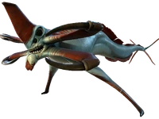
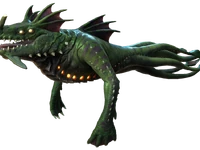
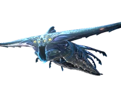
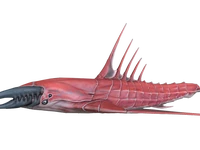
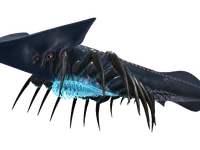

    
1 левіафан.Левіафан-жнець– гігантська хижа форма життя, що належить до категорії фауна класу «левіафан». Дуже небезпечний і може легко вбити гравця або позбавити його транспорту. Є найнебезпечнішим противником для транспорту, оскільки з одного захоплення здатний знищити Міль або з двох захоплень костюма рачок (зазвичай знищує з 3-4).Жнець має довге тіло, що трохи перевершує довжину Циклопа . Він, як і деякі інші хижаки планети 4546B має дві пари чорних або світло-зелених очей (у старих версіях). На голові цієї тварини знаходиться досить великий кістяний гребінь, призначений, швидше за все, для таранних ударів при битвах левіафанів.
2 левіафан.Морський дракон-левіафан- це гігантська хижа форма життя, що належить до категорії фауна і мешкає в умовах підвищених температур.Будова кістяка морського дракона дуже незвичайна. У черепі рептилії знаходяться 4 очні гнізда та 2 кістяні відростки в області морди, а з боків нижньої щелепи є рогові відростки. Грудна клітка складається з кісткових пластин, які також захищають шийний відділ. Верхня частина шиї та спина додатково захищені пластинчастим панциром. Морський дракон-левіафан має дві потужні чотирипалі перетинчасті лапи, за допомогою яких полює і пересувається, і сімома щупальцями, які складають більшу частину його довжини. У темряві дракон-левіафан помітний за двома біолюмінесцентними плямами на відростках на морді і двома рядами плям на череві. Також у морського дракона є незвичайна здатність «плюватися» лавою, за допомогою якої він може зупинити жертву, що рятується. Є верхньою ланкою харчового ланцюга тропічного регіону планети 4546B . Відомо про три живі особини: два морські дракони плавають навколо Лавового замку , а третій мешкає в Активній лавовій зоні .
3 левіафан.Примарний левіафан- гігантська агресивна форма життя категорії " Фауна ", що належить до класу " Левіафан ".Являє собою 107 метрову велику територіальну істоту синьо-блакитного забарвлення з унікальним мембранним м'язовим біолюмінесцентним тілом, адаптоване до глибини і здатне згинатися в будь-яке положення. Голова має молотоподібну форму і застосовується для тарана, який не травмує левіафану завдяки хрящовим виростам. 12 очей мають жовте забарвлення, рот маленький, проте потужні щелепи здатні розірвати плоть будь-якої істоти.
4 левіафан.Хеліцерат- це великий агресивний вид фауни в Subnautica: Below Zero . Великий хижий вигляд, що заповнює схожу екологічну нішу з акулами на Землі. Зовнішній вигляд схожий з ракоподібними та акулами. Додано до оновлення "SeaTruck".Єдиний безхребетний агресивний левіафан на Планеті 4546B . Сегменти його тіла нагадують креветок або древніх ракоскорпіонів , які мешкали в палеозої на Землі, тоді як форма тіла схожа на акулу.
5 левіафан.Тіньовий левіафан - представник гігантської хижої фауни в Subnautica: Below Zero .У тіньового левіафану витягнуте чорне тіло з гладкою чорною шкірою та 37 парами маленьких червоних плям, що йдуть від шиї до кінчика хвоста. Під кожною стороною ряду знаходиться коротший порядок із семи круглих отворів, які проходять лише вниз по шиї. Голова складається з трикутного щита з трьома парами маленьких чорних очей із великим червоним кільцем у центрі. Довга вертикальна щілина з поглибленням, покрита напівпрозорими, загостреними, довгими і блакитними «клаптями», є ротом істоти. Прямо під ротом знаходиться прозорий мішок, в якому зберігається нещодавно з'їдений видобуток.